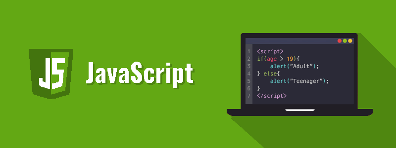

JavaScript – Njohuri themelore
JavaScript është gjuhë skriptimi nga ana e klientit më e popullarizuara dhe me aplikim shumë të gjerë.

Skriptimi nga ana e klientit u referohet skripteve që ekzekutohen brenda shfletuesit tuaj të internetit. JavaScript është krijuar për të shtuar ndërveprim dhe efekte dinamike në ueb-faqe duke manipuluar përmbajtjen që vije nga një ueb-server.
JavaScript u zhvillua fillimisht si LiveScript nga Netscape në mes të viteve 1990-ta. Më vonë u riemërua në JavaScript në vitin 1995 dhe u bë një standard ECMA në vitin 1997. Tani JavaScript është gjuha standarde e skriptimit nga ana e klientit për aplikacione të bazuara në ueb, dhe përkrahet nga pothuajse të gjithë ueb- shfletuesit të disponueshëm sot, të tilla si Google Chrome, Mozilla Firefox, Apple Safari, etj.
JavaScript është një gjuhë e orientuar në objekte, dhe gjithashtu ka disa ngjashmëri në sintaksë me gjuhën programuese Java. Megjithatë, JavaScript nuk ka lidhshmëri me Java në asnjë mënyrë.
JavaScript mirëmbahet zyrtarisht nga ECMA (European Computer Manufacturers Association – Shoqata Evropiane e Prodhuesve të Kompjuterëve) si ECMAScript. ECMAScript 6 (ose ES6) është versioni i fundit i standardit ECMAScript.
Çfarë mund të bëni me JavaScript?
Shumë gjëra mund të bëni me JavaScript.
- Mund të modifikoni përmbajtjen e një ueb-faqeje duke shtuar ose hequr elemente.
- Mund të ndryshoni stilin dhe pozicionin e elementeve në një ueb-faqe.
- Mund të monitoroni ngjarje (events) si klikimi i miut, hover efekti, etj. dhe të reagosh ndaj tij.
- Mund të kryeni dhe kontrolloni tranzicionet dhe animacionet.
- Mund të krijoni dritare pop-up për të shfaqur informacione ose mesazhe paralajmëruese tek përdoruesi.
- Mund të kryeni operacione të bazuar nga futja e të dhënave nga përdoruesit dhe t’i shfaqni rezultatet.
- Mund të validoni shënimet e përdorueseve përpara se t’i paraqisni ato në server.
Lista nuk përfundon këtu, ka shumë gjëra të tjera interesante që mund të bëni me JavaScript. Ju do të mësoni për të gjitha në detaje në kapitujt e ardhshëm.
Ueb shërbimet
Ueb serveri
Ueb serveri është një kompjuter ku ruhet përmbajtja e uebit. Në thelb ueb serveri përdoret për të ruajtur (hostuar) ueb-sajtet, gjithashtu ekzistojnë ueb serverë të tjerë për të hostuar lojëra, hapësira ruajtëse, FTP, email, etj.
Shënim: Ueb sajti është koleksion i ueb faqeve ndërsa ueb serveri është një softuer që i përgjigjet kërkesës për burime të uebit.
Puna e ueb serverit
Ueb serveri i përgjigjet kërkesës së klientit në njërën nga dy mënyrat e mëposhtme:
- Dërgimi i fajllit tek klienti të shoqëruar nga URL-ja e kërkuar.
- Gjenerimi i përgjigjes duke thirrur një skriptë dhe duke komunikuar me bazën e të dhënave.

Pikat kryesore
- Kur klienti dërgon kërkesë për një ueb faqe, ueb serveri kërkon për faqen e kërkuar, nëse gjendet faqja e kërkuar, atëherë ai do t'ia dërgojë atë klientit me një përgjigje HTT
- Nëse ueb faqja e kërkuar nuk gjendet, ueb serveri do të dërgojë një HTTP response: Error 404 Not found.
- Nëse klienti ka kërkuar për disa burime tjera, ueb serveri do të kontaktojë me ueb serverin e aplikacionit dhe bazën e të dhënave për të krijuar përgjigjen HTTP.
Ueb serverët kryesorë që janë sot në dispozicion:
- Apache HTTP Server
- Internet Information Services (IIS)
- Sun Java System Web Server, etj.
Ueb shfletuesi
Ueb Shfletuesi (Web Browser) është një softuer aplikativ që na lejon të shohim dhe të eksplorojmë informacione në ueb. Shfrytëzuesi mund të kërkojë çdo ueb faqe duke futur vetëm një URL në shiritin e adresave.
Ueb Shfletuesi mund të paraqes tekst, audio, video, animacion, etj. Është përgjegjësi e ueb shfletuesit të interpretojë tekstin dhe komandat që përmbahen në ueb faqe.
Më parë ueb shfletuesit ishin të bazuar në tekst ndërsa tani në ditët e sotme ueb shfletuesit bazohen gjithashtu në grafikë ose në zë. Më poshtë janë ueb shfletuesit më të zakonshëm të disponueshëm sot:
|
Shfletuesi |
Prodhuesi |
|
Microsoft Edge |
Microsoft |
|
Google Chrome |
|
|
Mozilla Firefox |
Mozilla |
|
Opera |
Opera Software |
|
Safari |
Apple |
Arkitektura
Ka shumë ueb shfletues të disponueshëm në treg. Të gjithë ata interpretojnë dhe shfaqin informacione në ekran, megjithatë aftësitë dhe struktura e tyre ndryshojnë në varësi të implementimit. Por komponenta më themelore që të gjithë ueb shfletuesit duhet të shfaqin janë radhitur më poshtë:
- Kontrolleri/ Dispeçeri
- Interpretuesi
- Programet e Klientit
Kontrolleri punon si njësi kontrolli në CPU. Ai merr inputet (hyrjet) nga tastiera ose miu, i interpreton ato dhe bën që shërbime të tjera të funksionojnë në bazë të inputit që merr.
Interpretuesi pranon informacionin nga kontrolleri dhe ekzekuton udhëzimet rresht për rresht. Disa interpretues janë të detyrueshëm ndërsa disa janë opsional. Për shembull, interpretuesi i programit HTML është i detyrueshëm dhe interpretuesi java është opsional.
Programi i Klientit përshkruan protokollin specifik që do të përdoret për tu qasë në një shërbim të veçantë. Në vijim janë programet e klientit që përdoren zakonisht:
- HTTP
- SMTP
- FTP,etj.

Ueb faqja
Ueb faqja është një dokument i disponueshëm në rrjetin botëror (world wide web – www). Ueb faqet ruhen në ueb server dhe mund të shikohen duke përdorur një ueb shfletues.
Një ueb faqe mund të përmbajë shumë informacione duke përfshirë tekst, grafikë, audio, video dhe hiperlidhje. Këto hiperlidhje janë lidhje me ueb faqet tjera.
Koleksioni i ueb faqeve të lidhura në një ueb server njihet si uebsajt. Ekziston një Lokator Unik i Burimeve Uniformë (Uniform Resourse Locator – URL) që shoqërohet me secilën ueb faqe.
Ueb faqet statike
Ueb Faqet Statike njihen gjithashtu si faqe të sheshta ose stacionare. Ato lexohen në shfletuesin e klientit ashtu siç janë të ruajtura saktësisht në ueb serverin. Ueb faqe të tilla përmbajnë vetëm informacione statike. Shfrytëzuesi mundet vetëm të lexojë informacionin por nuk mund të bëjë ndonjë modifikim ose të ndërveprojë me informacionin.
Ueb faqet statike krijohen duke përdorur vetëm HTML. Ueb Faqet statike përdoren vetëm atëherë kur informacioni nuk kërkohet më për t'u ndryshuar.

Ueb faqe dinamike
Ueb faqja dinamike tregon informacione të ndryshme në momente të ndryshme kohore. Është e mundur të ndryshoni një pjesë të një ueb faqe pa e ngarkuar përsëri tërë ueb faqen. Kjo bëhet e mundur duke përdorur teknologjinë Ajax.
Ueb faqe dinamike nga ana e serverit
Krijohet duke përdorur skriptingun nga ana e serverit. Ekzistojnë parametra të skriptimit nga ana e serverit që përcaktojnë se si të ndërtoni një ueb faqe të re, e cila gjithashtu përfshin vendosjen e më shumë procesimeve nga ana e klientit.
Ueb faqe dinamike nga ana e klientit
Këto faqe krijohen duke përdorur skriptimin nga ana e klientit siç është JavaScript, dhe pastaj përcillen në Modelin e Objektit të Dokumentit (Document Object Model – DOM).
Gjuhët Skriptuese
Një gjuhë skriptimi është gjuhë programimi që interpretohet, që do të thotë se përkthehet në kodin e makinës kur ekzekutohet kodi. Gjuhët e skriptimit përdoren shpesh për skripte të shkurtra në vend të programeve të plota kompjuterike. PHP, Perl dhe Python janë shembuj të zakonshëm të gjuhëve skriptuese.
Gjuhë skriptimi (e njohur gjithashtu si skripting, ose skriptë) përcaktohet qartë si një seri urdhrash që janë në gjendje të ekzekutohen pa pasur nevojë për kompajlim . Derisa të gjitha gjuhët e skriptimit janë gjuhë programimi, jo të gjitha gjuhët e programimit janë gjuhë skriptimi.
Gjuhët e skriptimit përdorin një program të njohur si interpretues – përkthyes për të përkthyer urdhrat dhe që interpretohen drejtpërdrejt nga kodi burimor, duke mos kërkuar një hap kompjalimi . Nga ana tjetër, gjuhët e tjera të programimit, mund të kërkojnë që një kompajler të përkthejë urdhrat në kodin e makinës para se të ekzekutojë ato urdhra.
Një gjuhë e interpretuar e programimit është një gjuhë e krijuar për të ekzekutuar kodin burimor direkt dhe pa nevojën e kompajlimit të një programi në instruksionet e gjuhën së makinës. Një interpretues do të ekzekutojë programin duke përkthyer deklaratat (statements) në një seri prej një ose më shumë nënrutinave përpara se t'i përkthejë ato përfundimisht në një gjuhë tjetër, siç është kodi i makinës.
Në gjuhët programuese të kompajluara, një program kompajlues përkthen kodin e shkruar prej një gjuhe programimi të nivelit të lartë në një gjuhë të nivelit më të ulët në mënyrë që programi të ekzekutohet. Programet C ose Java zakonisht duhet të kompajlohen së pari në mënyrë që të ekzekutohen. Dy kompajler të njohur janë Eclipse për Java dhe gcc për C dhe C ++.
Skriptimi nga ana e serverit krahas skriptimit nga ana e klientit
Ekzistojnë dy lloje të gjuhëve të skriptimit: nga ana e serverit dhe nga ana e klientit. I vetmi ndryshim i rëndësishëm midis të dyve është se i pari kërkon një server për ta proceduar.
Gjuhët e skriptimit nga ana e serverit ekzekutohen në një ueb server. Kur një klient dërgon një kërkesë, serveri përgjigjet duke i dërguar përmbajtjen përmes HTTP. Në të kundërt, gjuhët e skriptimit nga ana e klientit ekzekutohen në anën e klientit - në shfletuesin e tyre të internetit.
Përfitimi i skripteve nga ana e klientit është se ato mund të reduktojnë kërkesat në server, duke lejuar që ueb faqet të lexohen më shpejt. Ndërsa, një përfitim i rëndësishëm i skripteve nga ana e serverit është se ato nuk janë të dukshme nga publiku siç janë skriptet nga ana e klientit.
Kur vendosni se në cilën mënyrë t’ju qaseni një projekti, mbani në mend se skriptimi nga ana e klientit është më i fokusuar në ndërfaqen e përdoruesit (user interface) dhe funksionalitet. Në të kundërt, skriptimi nga ana e serverit fokusohet në procedim më të shpejtë, qasje në të dhëna dhe zgjidhjen e gabimeve.
Shembuj të gjuhëve të skriptimit nga ana e serverit
Më poshtë janë dhënë shembuj të gjuhëve të skriptimit nga ana e serverit.
|
Gjuhë |
Komente |
|
PHP |
Gjuha më e njohur nga ana e serverit që përdoret në ueb. |
|
ASP.NET |
Biblioteka (framework) e ueb aplikacioneve e zhvilluar nga Microsoft. |
|
Node.js |
Mund të ekzekutohet në një mori platformash, përfshirë Windows, Linux, Unix, Mac, etj. |
|
Java |
Përdoret në gjithçka, nga Bluetooth stereoja e makinës suaj deri tek aplikacionet e NASA-s. |
|
Ruby |
Dinamik. Përqendrohet shumë tek thjeshtësia. |
|
Perl |
Një grimë kombinimi midis C, skriptave shell, AWK dhe sed. |
|
Python |
E shkëlqyeshme për fillestarët për të mësuar. Përdor kodin më të shkurtër. |
Shembuj të gjuhëve të skriptimit nga ana e klientit
Më poshtë janë shembuj të gjuhëve skriptuese nga ana e klientit.
|
Gjuhë |
Komente |
|
HTML |
Themeli i zhvillimit të ueb-it. |
|
CSS |
Përmirëson pamjen dhe grafikun në faqet e ueb shfletuesin tuaj. |
|
JavaScript |
Megjithëse tipik nga ana e klientit, herë pas here mund të përdoret edhe nga ana e serverit. |
Hyrje në JavaScript
Në këtë material mësimor do të mësoni se si të krijoni një ueb-faqe me JavaScript.
Këtu, ju do të mësoni se sa e lehtë është të shtoni ndërveprimin (ineraktivitet) në një ueb-faqe duke përdorur JavaScript. Por, para kësaj, duhet që të keni disa njohuri pune në HTML dhe CSS.
Shtimi i JavaScript në faqet tuaja të uebit
Zakonisht ekzistojnë tri mënyra për të shtuar JavaScript-in në një ueb-faqe:
- Vendosja e kodit JavaScript brenda në HTML në mes etiketave <script> dhe </script>.
- Krijimi i një fajlli të jashtëm JavaScript me ekstensionin .js dhe më pas të krijohet një lidhje përmes atributit src nga etiketa <script>.
- Vendosja e kodit JavaScript direkt brenda një etikete HTML duke përdorur atributet speciale të etiketave të tilla si onclick, onmouseover, onkeypress, onload, etj.
Vendosja e kodit JavaScript brenda në HTML
Ju mund ta vendosni kodin JavaScript direkt në ueb-faqet tuaja duke e vendosur atë në mes etiketave <script> dhe </script>. Etiketa <script> i tregon shfletuesit se udhëzimet që përmbahen duhet të të interpretohen si kod i ekzekutueshëm dhe jo HTML.